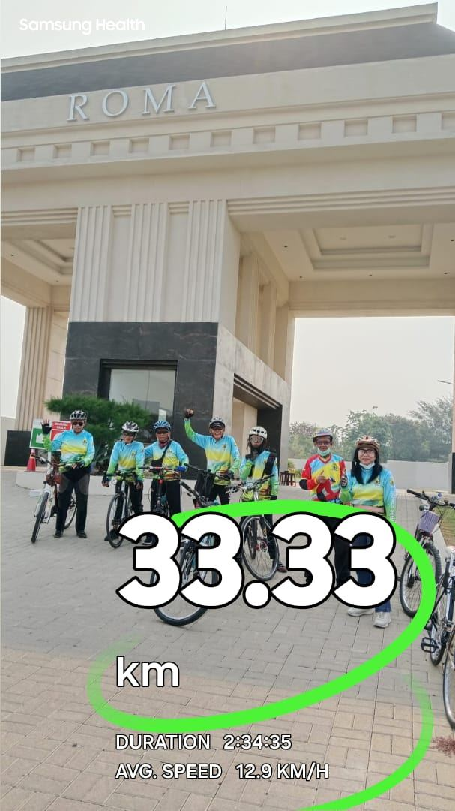
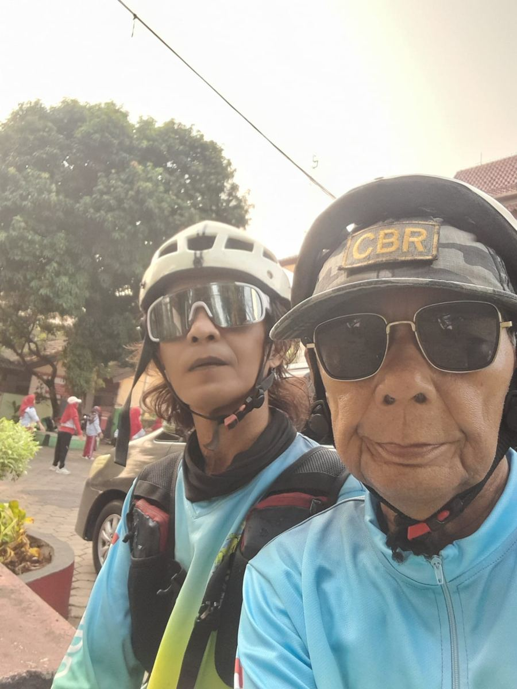

Dua dekade mengayuh bersama dari Pondok Kelapa. Besok kita rayakan di ujung selatan Jawa.
Lihat trip Ujung Genteng Galeri
Kami komunitas sepeda dari Pondok Kelapa, Jakarta Timur. Jersey hijau-merah-kuning dan biru-hijau kami sudah dikenal di jalanan, dari sepeda lipat sampai road bike klasik. Siapa pun boleh ikut, yang penting kompak dan sampai garis akhir bersama.
